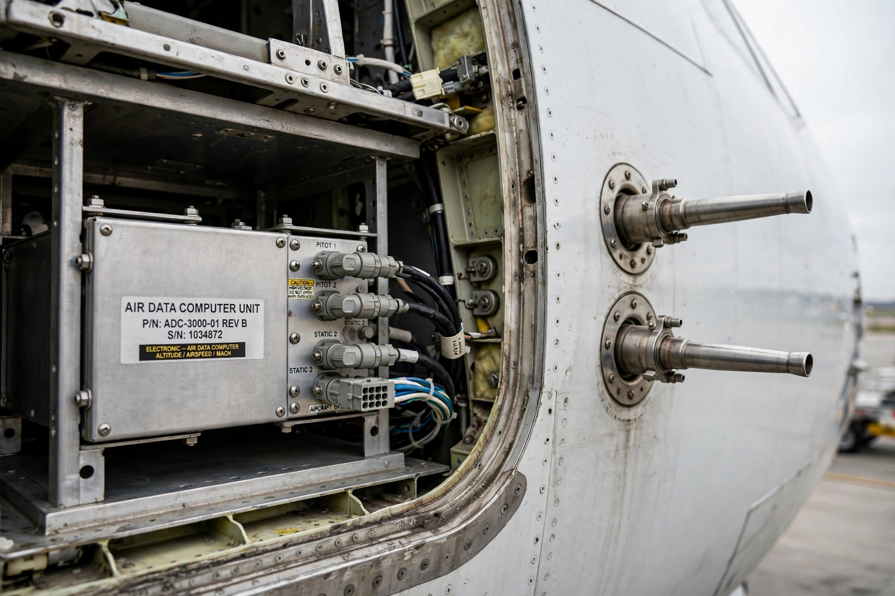

Air Data Reference
From Wikipedia, the free encyclopedia

An air data reference unit on an airlinerThe Air Data Reference (ADR) is the air-data component of the Air Data Inertial Reference System (ADIRS) fitted to modern fly-by-wire airliners such as the Airbus A320 family and Boeing 777. It computes and supplies the flight computers with airspeed, altitude, angle of attack and related parameters.
Function
The ADR collects raw measurements from pitot tubes (total pressure), static ports (ambient pressure) and angle-of-attack vanes, and from total air temperature probes. From these it derives:
- Indicated and true airspeed, and Mach number
- Barometric altitude and vertical speed
- Angle of attack and sideslip
- Static and total air temperature
Architecture
For redundancy, airliners typically carry three ADRs, whose outputs are monitored and voted by the flight-control computers; a disagreeing unit can be deselected in flight. The ADR works alongside the Inertial Reference (IR) unit, which supplies attitude, heading and acceleration data, within one line-replaceable ADIRU or separate LRUs.
Safety significance
Erroneous air data — for example from iced or blocked pitot tubes — has been a factor in several accidents, underscoring the criticality and redundancy of the ADR function.